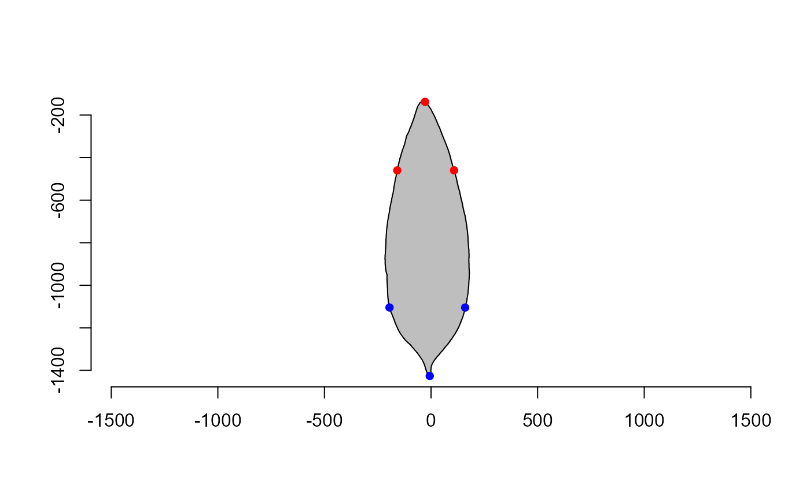

This function calculates the apex and base angles of an object. It takes as
input a matrix of coordinates and returns the apex angle, base angle, and the
coordinates of the apex and base as a list. The angles are computed after the
object is aligned in the vertical axis with poly_align().
Usage
poly_apex_base_angle(
x,
percentiles = c(0.25, 0.75),
invert = FALSE,
plot = TRUE
)Arguments
- x
A matrix of coordinates representing the contour of the object, often obtained with
object_contour().- percentiles
A numeric vector of two percentiles between 0 and 1 indicating the height of the points from the top to the bottom. The function calculates the apex angle between the two percentiles and the base angle between the lowest point and the highest point.
- invert
If
TRUE, aligns the object along the horizontal axis.- plot
Plots the polygon with the points? Defaults to
TRUE.
Examples
library(pliman)
# a matrix of coordinates
angls <- poly_apex_base_angle(contours[[2]])

angls
#> $apex_angle
#> [1] 44.96998
#>
#> $base_angle
#> [1] 57.70275
#>
#> $apex_coords
#> [,1] [,2]
#> apex -28.26853 -137.8909
#> left -158.48484 -460.1093
#> right 108.09502 -459.6874
#>
#> $base_coords
#> [,1] [,2]
#> base -5.980237 -1426.272
#> left -194.774675 -1104.431
#> right 160.035021 -1104.714
#>
# or a list of coordinates
poly_apex_base_angle(contours)
#> id apex_angle base_angle
#> 1 1 58.37192 32.28509
#> 2 2 44.96998 57.70275
#> 3 3 57.83157 41.66856
#> 4 4 44.06891 43.39274
#> 5 5 38.57844 41.63098
#> 6 6 43.34263 44.18222